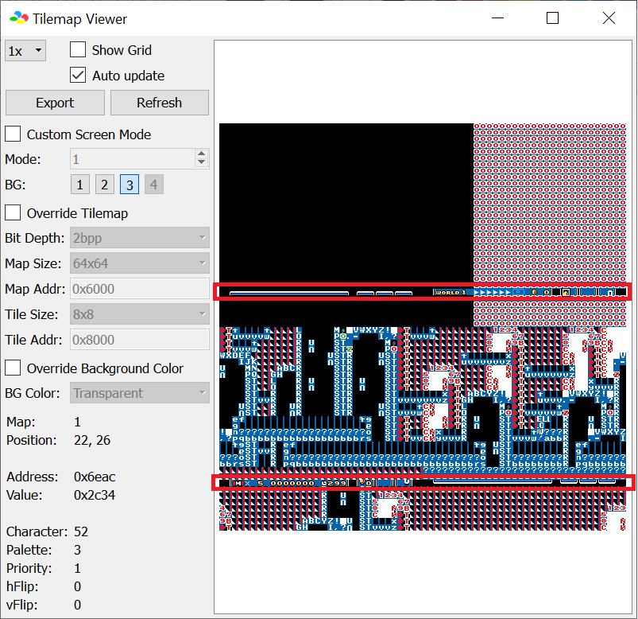
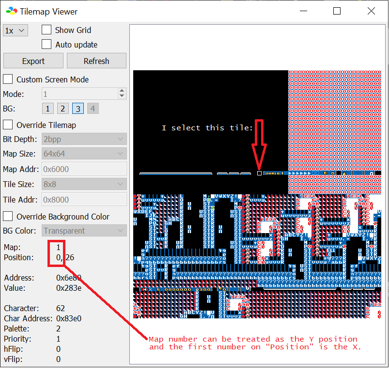

Unlike most other layer 3 status bar patches, tile conversion to coordinates is completely different. Instead of having all the tiles all together in the tilemap, each horizontal lines of 8x8 tiles are split into each
4 “screens” of the tilemap: 
Thankfully, Bsnes+ v4 (or higher) tile coordinate system is updated to show its position
relative to each one of the 4 screens instead of the top-left corner of all 4 screens. The map number can be used as the “row number/Y position”.
To obtain the coordinate of the selected tile, run Bsnes+, and on any level, go to Tools &rightwarrow; Debugger &rightwarrow; S-PPU &rightwarrow; Tilemap Viewer and
select “3” on the BG layer, and enable “Auto Update”. Because the status bar writing is timing-based when drawing the screen, there is
a chance that the tilemap will only display layer 3 non-status bar (layer 3 backgrounds, for example) as the debugger only displayed it during non-status bar write,
therefore a breakpoint and “stepping” around $0082A4 will help. After that, select any status bar tile, you should get the map number (Y position for this table)
and the first number in “Position” (X position for this table): 
Then on this HTML file, CTRL+F and enter (<X_position>,<MapNumber>).